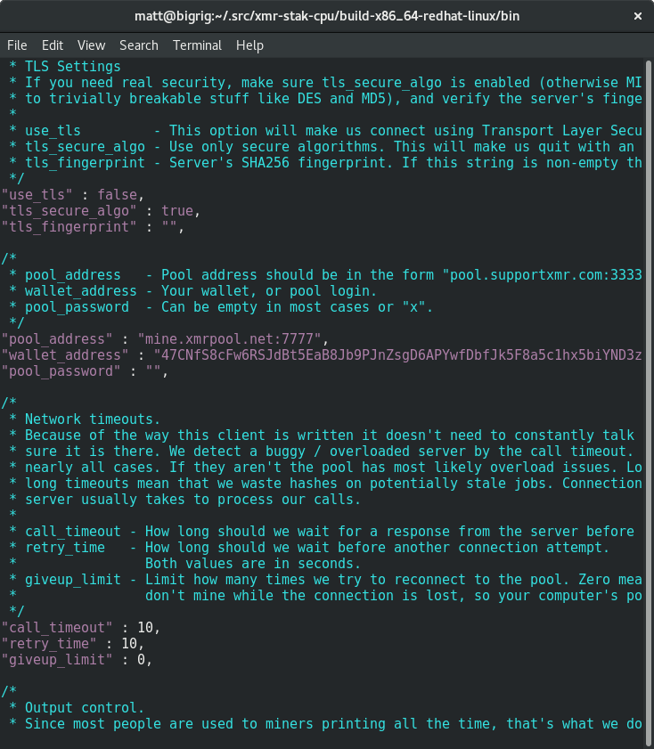

Wybieranie zrzeszenia
Istnieje wiele zrzeszeń do wyboru. Lista dostępna jest na stronie moneropools.com. Wydobywanie w większym zrzeszeniu może oznaczać częstszą wypłatę, ale to wydobywanie w mniejszej grupie pomaga utrzymać sieć zdecentralizowaną.
Wybieranie koparki CPU
Tak jak i zrzeszenia, istnieje wiele koparek do wyboru. Twój wybór powinien zależeć od sprzętu, na którym chcesz wydobywać. Ten przewodnik opisuje jedynie koparki CPU i używa xmr-stak-cpu. Inną opcją są wolf's CPUMiner oraz sgminer-gm, jednak ich ustawienia są trochę inne i nie są włączone w ten przewodnik.
Dla Windowsa
Jeżeli używasz Windowsa, deweloper xmr-stak-cpu dostarcza plików binarnych do ściągnięcia na stronie GitHuba.
Ściągnij plik xmr-stak-cpu-win64.zip i wypakuj do miejsca, które łatwo później odnajdziesz.
Pozostałe systemy operacyjne
Jeśli nie korzystasz z Windowsa, będziesz musiał skompilować xmr-stak-cpu samemu. Na szczęście to nie takie trudne, jak się wydaje. Zanim skompilujesz koparkę, będziesz musiał zainstalować kilka wymaganych komponentów.
Dystrybucje oparte na Debianie:
sudo apt-get install libmicrohttpd-dev libssl-dev cmake build-essential
Dystrybucje oparte na Red Hat:
sudo yum install openssl-devel cmake gcc-c++ libmicrohttpd-devel
Następnie wystarczy użyć cmake do wygenerowania plików kompilacji, uruchomić je i skopiować plik konfiguracyjny:
mkdir build-$(gcc -dumpmachine)
cd $_
cmake ../
make -j$(nproc)
cp ../config.txt bin/
cd bin
Jeszcze nie świętuj. bo koparka musi zostać skonfigurowana. Uruchomienie jej w tym momencie powinno spowodować ukazanie się bloku tekstu do skopiowania i wklejenia:

Otwórz plik config.txt i zamień dwie linie "cpu_threads_conf" na tekst, który właśnie skopiowałeś. Potem powinno wyglądać to tak:

Przewiń plik aż odnajdziesz linie zawierające "pool_address". Zamień zawartość drugiego cudzysłowiu na adres i port zrzeszenia, które wcześniej wybrałeś. Znajdziesz tę informację na stronie zrzeszenia.
Wstaw adres swojego portfela między cudzysłów z adresem. Hasło możesz zostawić puste, chyba że zrzeszenie sprecyzuje inaczej.
Po tym, twoja konfiguracja powinna wyglądać mniej więcej tak:

Uruchomienie koparki
Zapisz plik konfiguracyjny i uruchom koparkę!

Niektóre zrzeszenia pozwalają na monitorowanie twojej prędkości haszowania poprzez wklejenie twojego adresu na ich stronę. Możesz także śledzić ją, klikając klawisz h.
Ustawienia koparki
Możesz zobaczyć takie niemiłe wiadomości:
[2017-07-09 12:04:02] : MEMORY ALLOC FAILED: mmap failed
Oznacza to, że możesz zwiększyć swoją prędkość haszowania o około 20% poprzez włączenie dużych stron.
Duże strony w Linuxie
Najpierw zatrzymaj koparkę, jeśli jest włączona. Uruchom poniższą funkcję, aby włączyć duże strony, a następnie uruchom koparkę jako root:
sudo sysctl -w vm.nr_hugepages=128
sudo ./xmr-stak-cpu
Duże strony w Windowsie
Wzięte z config.txt:
Opcja użycia dużych stron jest domyślnie wyłączona. Oznacza to, że musisz uruchomić Windowsa jako administrator i zmienić zasady grupy systemowej na pozwolenie użycia dużych stron. Poniżej znajdują się kroki według MSDN:
- W menu Start, kliknij "Uruchom". W otwartym okienku wpisz gpedit.msc.
- W edytorze zasad grupy systemowej rowziń Konfiguracje Komputera, a następnie rozwiń Ustawienia Windowsa.
- Rowziń Ustawienia Bezpieczeństwa, a następnie rowziń Lokalne Zasady.
- Wybierz folder Przypisanie Praw Użytkownika.
- Zasady zostaną wyświetlone w okienku ze szczegółami.
- W tym okienku kliknij dwukrotnie na Blokadę stron w pamięci.
- W Ustawieniach Lokalnego Bezpieczeństwa - okno dialogowe Blokada stron w pamięci kliknij Dodaj Użytkownika lub Grupę.
- W oknie dialogowym Wybierz Użytkownika, Konto Usługi lub Grupę dodaj konto, na którym uruchomisz koparkę.
- Zreinicjuj komputer, aby zmiany zostały zapisane.